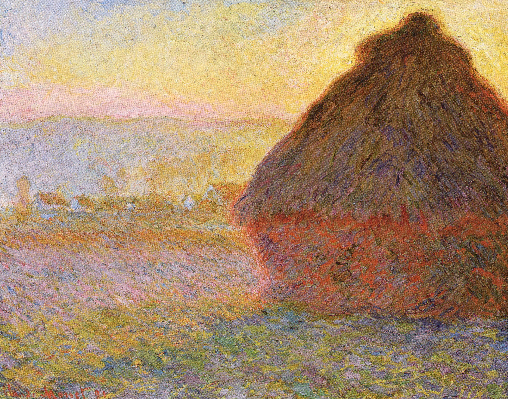
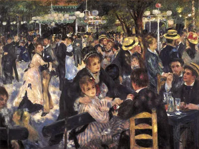
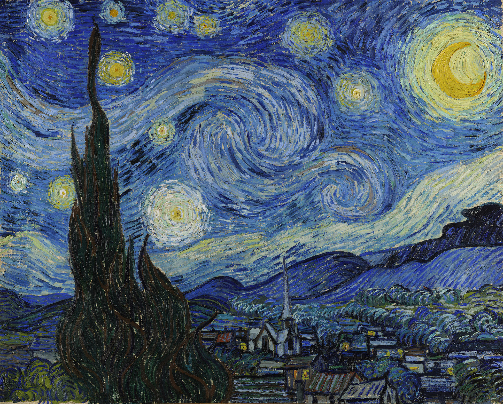

The Impressionists
What's Impressionism?
Impressionism was a 19th-century art movement characterized by visible brush strokes, open composition, emphasis on accurate depiction of light in its changing qualities (often accentuating the effects of the passage of time), ordinary subject matter, unusual visual angles, and inclusion of movement as a crucial element of human perception and experience.
Impressionism originated with a group of Paris-based artists whose independent exhibitions brought them to prominence during the 1870s and 1880s.
Artists
Some of the famous Impressionists of our time were:
- Claude Monet
- Pierre-Auguste Renoir
- Vincent Van Gogh
- Berthe Morisot
- Camille Pissarro
- Mary Cassatt
Artworks
Presenting a gallery of the most prestigious artworks of the era.
  
Galleries
You can visit these galleries to view the worrks of art:
- Musée d'Orsay (Paris)
- National Gallery of Art (Washington, D.C.)
- Museum Barberini (Potsdam, Germany)
- Courtauld Gallery (London)
- Musée Marmottan Monet (Paris)